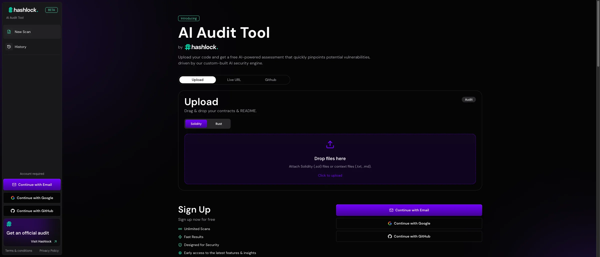

AI — Evaluation — Monitoring
Hashlock AI Auditor
A production AI system where output quality directly matters — built with the evaluation harness and observability needed to measure audit performance over time.
Read case studyYou can’t improve what you can’t measure. Most AI systems in production aren’t being measured in any meaningful way.
Engagement
Engineering & Governance
Typical Duration
3 – 6 weeks
Focus & Stack
Frameworks, tools, and infrastructure that tell you whether your AI is working and where it’s not. Systematic quality measurement, drift detection, cost tracking, and continuous improvement driven by evidence instead of intuition.
Systematic quality measurement by task type. Classification: accuracy, precision, recall, F1. Extraction: field-level accuracy. Generation: LLM-as-judge, rubric-based human evaluation.
High-quality evaluation sets created with domain experts. Diverse, representative, including edge cases. Versioned and expandable.
Runs on every prompt change or model update. Catches regressions before production. Integrated into CI/CD.
Quality sampling, drift detection, cost monitoring, latency tracking (p50, p95, p99), error monitoring. Alerts when scores drop below thresholds.
Route traffic between variants, collect quality metrics, compute statistical significance. Replace "it feels better" with "it is measurably better."
Real-time visibility. Overall scores, trends, per-feature breakdowns, cost tracking. Different views for engineering, product, and leadership.
Concrete, measurable quality criteria for each AI system.
Concrete, measurable quality criteria for each AI system.
Evaluation datasets with domain experts.
Evaluation datasets with domain experts.
Pipeline that runs on every change.
Pipeline that runs on every change.
Monitoring, alerting, dashboards.
Monitoring, alerting, dashboards.
Evidence-driven iteration cycle.
Evidence-driven iteration cycle.
Deliverables
Most teams don’t invest in evaluation until something goes wrong. We build it in from the start because it’s the only way to operate AI systems with confidence.